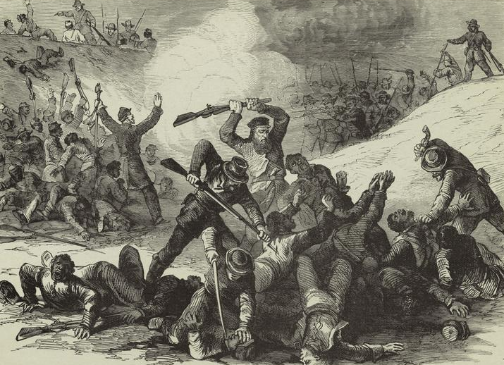

|
Fort Pillow was the site of an 1864 massacre of mostly
African-American Union soldiers by troops under the command
of Confederate General Nathan Bedford Forrest.
Located 40 miles north of Memphis on the Chickasaw

Confederate General Nathan
Bedford Forrest, a onetime slave trader and
later leader of the Ku Klux Klan.
|
Bluffs, Fort Pillow was built in 1861 as a Confederate
fortification overlooking the Mississippi River.
Confederate troops abandoned the fort in June, 1862, after
Union victories in the area jeopardized their position. For
the next two years Union troops intermittently occupied the
site.
On April 12, 1864, Confederate General Nathan Bedford
Forrest led about 1,500 troops in an attack on the Fort,
then garrisoned by just over 500 Union soldiers, nearly half
of them black. During the initial fighting, Forrest's
sharpshooters killed Major Lionel F. Booth, the fort's
commander. Forrest then demanded that the fort surrender,
guaranteeing the safety of Union soldiers inside---an offer
which, Forrest's representatives avowed, included black
soldiers as well. Major William E. Bradford, who took
command on Booth's death, refused to give up the fort.
Forrest's men, positioned in well-protected ravines below
the fortification's low earth walls, now attacked. In about
twenty minutes they had overrun the works.
As Union soldiers surrendered, Bedford ordered that they
be cut down. Wrote one Confederate soldier, "The poor
deluded Negroes would run up to our men, fall upon their
knees...for mercy, but they were ordered to their feet and
then shot down... The fort turned out to be a great slaughter
pen.... Gen. Forrest ordered them shot down like dogs... Finally
our men became sick of blood and the firing ceased." By the
end of the battle, 64% of black and 33% of white Union
soldiers had been killed. Bedford had lost fourteen men.
The massacre instantly outraged Northerners. Congressman
Benjamin Wade demanded an investigation, while President
Lincoln considered executing selected Southern Prisoners of
War. Fearing a cycle of retaliatory violence, Lincoln
decided against that extremity; even so, the phrase
"Remember Fort Pillow!" became a battle cry among white
soldiers as well as black.
Forrest later denied any massacre had taken place,
|

Whether a massacre occurred at Fort Pillow
was a subject of disagreement in the 1860s, and is still
debated today. However, the majority of historians argue
that it was, indeed, a massacre.
|
claiming that his troops faced gunfire even after the fort
had raised the white flag of surrender, and had acted
accordingly. Some historians have argued that Forrest and
his soldiers were enraged at the extortion, lawlessness, and
destruction they believed that Union soldiers had visited on
Tennessee. Some of the worst offenders, Forrest believed,
were Tennessee unionists at Fort Pillow. Others argue that
Forrest himself tried to halt the bloodshed but was
unsuccessful.
Historians note that it was Confederate policy to execute
African-Americans wearing the Union blue. Though enforced
inconsistently, many Confederate officials believed the
policy was a necessary defense against "servile rebellion,"
and a rebuke to Northerners intent on sending "savages"
against the South. The policy extended to white officers
commanding black regiments, a fact which may explain the
shooting death of Major Bradford in Confederate custody a
few days after the battle.
No one disputes that it was Forrest's practice to offer
protection to besieged adversaries if they surrendered, but
promise dire consequences if they refused. At Fort Pillow,
Forrest was true to his word.
Source: Joan Waugh, ed., Facts on File Encyclopedia of American
History: Civil War and Reconstruction, 1856 to 1869 (New York: Facts on
File, 2003), 135.
|